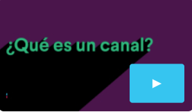

Slack es tu sede digital
Transforma tu manera de trabajar con un único lugar para todo el mundo y todo lo que necesitas para hacer las cosas.
PRUÉBALO GRATIS


Muévete más rápido organizando tu vida laboral
La clave de la productividad en Slack son los espacios organizados, llamados “canales”, uno diferente para cada proyecto en el que estés trabajando. Al tener a todas las personas, mensajes y archivos relacionados con un tema en un mismo lugar, puedes avanzar mucho más rápido.
Obtener más información sobre los canales Focaliza tu tiempo marcando tus propias condiciones
Date la flexibilidad de trabajar cuando, donde y como mejor te venga. Toma el control de las notificaciones, colabora en directo o en el momento que prefieras y encuentra respuestas en las conversaciones de toda la empresa.
Abrir la puerta a horarios de trabajo más flexibles en SlackSimplifica el trabajo en equipo para todo el mundo
Ofrece a todos tus compañeros (de dentro y fuera de tu empresa) una forma más productiva de mantener la sincronización. Responde más rápidamente con emojis, mantén las conversaciones centradas en los canales y simplifica toda tu comunicación en un mismo lugar.
Descubrir cómo trabajar con socios externos en SlackPrimeros pasos en Slack
1
Regístrate
Crea un nuevo espacio de trabajo de Slack en unos instantes. Todos los equipos, sean del tamaño que sean, pueden probarlo de forma gratuita.
2
Invita a tus compañeros de trabajo
Slack es mejor en compañía (no, en serio, resulta un poco decepcionante si se utiliza en solitario) y es muy fácil invitar a tu equipo.
3
Pruébalo
Dirige un proyecto, coordínate con tu equipo o simplemente habla de ello. Slack es un lienzo en blanco para el trabajo en equipo.